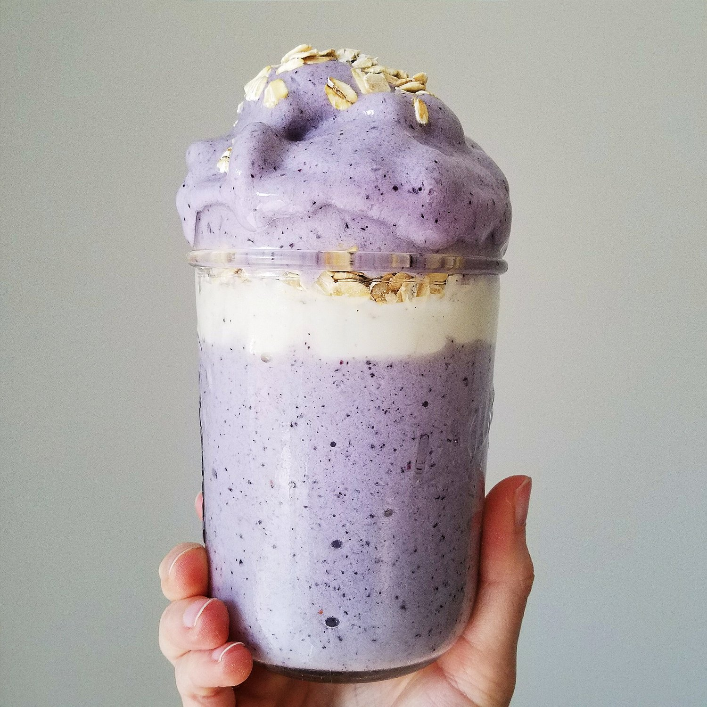

Vegan Blueberry Muffin Smoothie (gluten free)

Vegan blueberry muffin smoothie because I can't get enough blueberries lately! This striking, flavorful smoothie is naturally vegan, gluten free, and sugar free as well! This recipe is also packed with protein, perfect for a refreshing summertime drink.
I got to ride my bike outdoors all weekend for the first time in a month and YEAPP IT'S SUMMERTIME. Jeeeeez it was hot but soo fun. I'm like. I FEEL the sunburn seeping in but like also vitamin D so like...It's okay then right?? Hah. Don't get me wrong, I really love the trainer I got and Zwift virtual course software, but. There's nothing like riding and stopping to see miniature horses, hearing the cicadas in the heat, and socializing with friends during a ride.
On my Sundays, I often go to a small town that's very "countryside Georgia." It's a nice area for a relaxed recovery ride with beautiful scenery. There's horses, mini horses, cows, you name it! This week, I think we saw a Walking Dead set!! They do film in this particular area in the past, so it wouldn't be too out of place at all. It was pretty neat to see! I took pictures for reference when the new season comes out. If this house isn't in the new season, then I'm not sure what they were filming! But it's something very spooky with gravestones. Either way, pretty cool.
After the long rides this weekend, it was perfect to come home to a cold vegan blueberry muffin smoothie. So extremely refreshing. And FILLING! I don't usually get full from smoothies, but this was just perfect. I was pleasantly surprised.
Try out this vegan, gluten free, sugar free, and protein packed smoothie for yourself. It's really easy to make; it takes just 5 minutes to blend it all and dig in. Let me know what you think!
Vegan Blueberry Muffin Smoothie
Serves: 1
Smoothie Ingredients
-
1 banana, frozen
-
¼ cup frozen blueberries
-
¼ cup raw oats
-
1 cup unsweetened almond milk
-
6-7 vanilla Sweetleafstevia drops
-
5-6 ice cubes
Toppings
-
¼ cup vanilla soy yogurt
-
2 TBSP raw oats
Blend together all of the ingredients, except for the toppings. Layer in a large cup with the toppings. Enjoy!